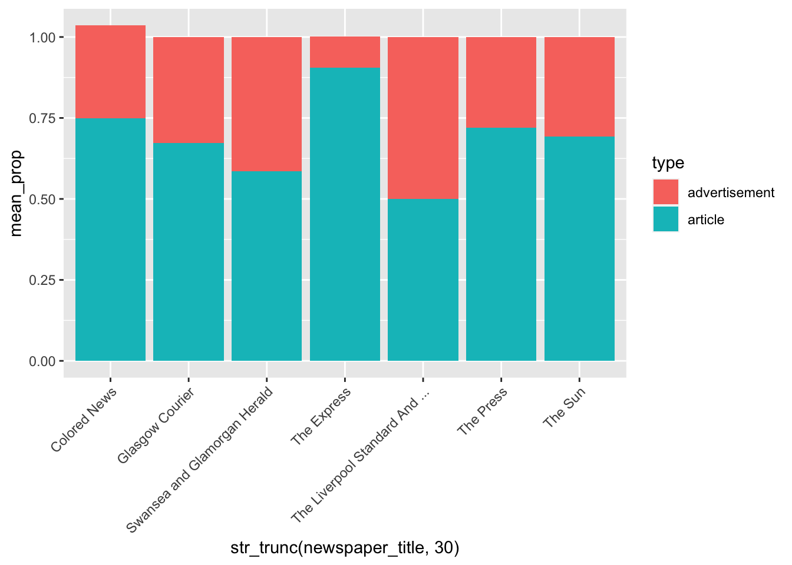

13 Machine Learning with Tidymodels
This chapter looks at machine learning using historical newspapers and the ‘tidymodels’ framework. We’ll build a classifier which learns, from some pre-labelled examples, to differentiate between advertisements and news articles. We’ll evaluate the model, and fine-tune its parameters. This chapter is heavily indebted to existing tidymodels tutorials on the web, such as the one from Supervised Machine Learning in R by Emil Hvitfeldt and Julia Silge.
Machine Learning
Machine learning is the name for a group of techniques which take input data of some kind, and learn how to achieve some particular goal. The ‘deep learning’ used by neural networks and in particular things like ChatGPT are one type, but the field has been around for much longer than that.
Machine learning itself can be divided into subsets: Machine learning done with neural networks, and what we might call ‘classical’ machine learning, which use algorithms.
A very simple form of machine learning is linear regression. Linear regression attempts to find the best fitting line through a dataset. Take this dataset of the flipper size and body mass of a group of observed penguins (from the R package palmerpenguins:
By visually inspecting this, we can guess that there is a statistical relationship between the length and mass: as one value gets higher, the other does too. We can use geom_smooth() and a linear model to predict the best line of fit through this dataset:
`geom_smooth()` using formula = 'y ~ x'Warning: Removed 2 rows containing non-finite values (`stat_smooth()`).Warning: Removed 2 rows containing missing values (`geom_point()`).
If we measured the slope of this line (using simple geometry), its angle would tell us about the relationship between the two values.In this way, our model helps us to understand some underlying pattern in the dataset - that these two values are highly correlated. We could also use it to predict new values: if given the body mass for a new penguin, by using this line, we could predict its most likely flipper length, and in most cases be fairly accurate.
This is a form of simple machine learning. We give an algorithm (here, linear regression) a bunch of input data, in this case the body mass and bill flipper length for a group of penguins, and it provides a model (in this case, a line with a certain slope), which hopefully helps us to explain the existing data and predict unknown parts. Models like this try in some way to minimise a loss function. In this case, finding the line where the error for each point (how far away it is from the line) is as small as possible.
The machine learning here will use basically the same principle. We’ll give it data (text, in the form of a mathematical representation of the text, and its assigned category), and an algorithm (in this case, a ‘Random Forest’ model), and use that to predict the category of unseen texts. The model itself may also tell us something about the existing data.
Much of the AI work at the cutting edge of text analysis today uses neural networks, and in particular the ‘transformer’ mechanism which allows neural networks to better understand context and word order. But this kind of machine learning still has a very important role to play, it’s well-established, relatively easy to run, and the results can be quite good depending on the problem. It is also a good way to get started with understanding the Tidymodels framework.
The Tidymodels Package
Tidymodels is an R ‘meta-package’ which allows you to interact with lots of different machine learning packages and engines in a consistent way. Using tidymodels, we can easily compare multiple models together and we can swap in one for another without having to re-do code. We also can make sure that our pre-processing steps are precisely consistent across any number of different models.
Machine learning can be used for a number of different tasks. One key one is text classification.
In this tutorial, we will use tidymodels to classify text into articles and advertisements. It could easily be generalised to any number of categories, for example foreign news, court reporting, and so forth. You can provide your own spreadsheet of training data (as we’ll use below), and as long as it is in the same format and has similar information, you should be able to build your own classifier.
Once we have built the model, we will fine-tune it. The random forest algorithm we’ll use, like most machine learning algorithms, has a group of parameters which can be adjusted. To find the best values for these, we’ll evaluate the same data using many different combinations of parameters, and pick the best one. Using tidymodels, this can all be done consistently. We could even swap out any other model type, and otherwise reuse the exact same workflow.
Finally, we’ll put the model to some use: we’ll use the model to predict the class of the rest of the articles in the newspaper dataset, and do some analysis on this.
The model is only as good as the training data, and in this case, we don’t have many examples, and it won’t be terribly accurate in many cases. But it will show how a machine learning model can be operationalised for this task.
Basic Steps
In this chapter we’ll create a model which can label newspaper as either articles or advertisements. We’ll do some further steps to explore improving the model, and also to look at the most important ‘features’ used by the model to do its predicting. The steps are:
Download a labelled dataset, containing examples of our two classes (articles and advertisements).
Create a ‘recipe’ which is a series of pre-processing steps. This same recipe can be reused in different contexts and for different models.
Split the labelled data into testing and training sets. The training data is used to fit the best model. The test set is used at the end, to see how well it performs on unseen data.
Run an initial classifier and evaluate the results
‘Tune’ the model, by re–running the classifier with different parameters, selecting the best one.
Run the ‘best’ model over the full news dataset, predicting whether or not an articles is news or an advertisement.
Install/load the packages
As a first step, you’ll need to load the necessary packages for this tutorial. If you haven’t already done so, you can install them first using the below.
If you have installed them, make sure you update to the latest version, as they can change rapidly.
install.packages('tidyverse')
install.packages('tidymodels')
install.packages('textrecipes')
install.packages('tidytext')
install.packages('ranger')
install.packages('vip')library(tidyverse)
library(tidymodels)
library(textrecipes)
library(tidytext)
library(ranger)
library(vip)Import data
As a first step, load some pre-labelled data. This contains a number of newspaper articles, and their ‘type’: whether it is an advertisement or an article.
If we take a look at the dataframe once it is loaded, you’ll see it’s quite simple structure: it’s got a ‘filename’ column, the full text of the article store in ‘text’, and the type stored in a column called ‘type’.
advertisements_labelled = read_csv('advertisements_labelled.csv')
advertisements_labelled = advertisements_labelled %>% filter(!is.na(text))
advertisements_labelled %>% head(5) %>% kableExtra::kbl()| filename | art | text | issue_name | type |
|---|---|---|---|---|
| newspapers//0002194/1855/0328/0002194_18550328.csv | 107 | 4 ,;,-A4J - BriTtr EMIT MO NT BLANC aci t s WILT, at 8 o'clock, apd Every 111,, , 1it . (but - SaturdaY)- k e Area, 23.; GaTlcry, ls.. The. 31ornnil ite‘orese , n , ta_t , t , ons 'facsttly, ThunAlay. and Satardkr, at 3-1) • 'Y u-04101 , OF LONDON. (By Royal uarte.r., .L,: --Prizeholder s select -!•cr thefreo.lre3 from the publte Gi apy Subscriber f GUINEA will hif , l3:o, IiEEVES the .11;,„` , 1 ze, cat Impresslon of a Plate of Yr ATER , 1 it of A.E.A:, after J. J. Chalon, R.A., aA a. Quarto Lr,rll.llrly Illustrations of Byron's Childe Harold.' The kb! 2d ,Y for delivery anl 1.11,3 volume may be rem at the 4cription closes 1 durd ay next, 31st instant. GEORGE Iknorary LEWIS POCOCK, $ Secretaries. trancl, March. -SYLUM LIFE ASSURANCE OFFICE, 12, CONNII(LC , London. • R . F'statili:hed 1824. , and Dlveased Lives. at Home and Abroad, for And Naval Employments.. The only Office on purely 'l:eld„ rj , th ' , il . , les, involving, therefore, no Partnership among .for prospectases, prapwal paper?, ap•)ly to - MANLEY DOPKI Hesldent Director. GUILDHALL, Ms.acn `i7, 1855. L Av ' O II.IMITTRE for LETTING the CITY'S 40,.'2 1) ftv,111 met at Guildhall, on Wes,inesday. the 4:h April Celock precisely, to 3 eceive Proposals for Leases of a 411'.; + . 12, Wood•street, Cheapside ; Two E0r..?0, No. 18 and ; Rouse, No, 9, F , outh.place ; a Iloive, No. 22, a House, No. 59, Great Leonard-street ; and a ood-street, Finsbury. al;articulari and Pla , s may he seen, and Forms of Tender the .Architect's Oftlee, Guildhall. FERDINAND BRAND, Comptroller. t R kNii IfIIECTORS of the ROYAL' BRITISH 1t of Prepared to receive, Appeal - ions for their New ofeelt, tinder the provislons of their 'upplement9l la st;ranted by the Crown. A pplica)loll3 to be made, with- (lead (lace, No. 16, Tokenhouse-yard, or at tho kran‘4,77, '. road, Lambeth ; 97, Ges:vrtll-road, miftesbury-terrace, Victoria-street. Pimlico; 60, &okthvrark ; and 32, Regent-circus, riccatlilly. IliJOti INNES -CAMEION, Ceaeral Manager. ,T IONAL PROVINCIAL BANK of ENGLAND. 11?., Tlishopsgate-street, London, Yard). 27, 1855. t e itim ,- s t o i f u the Natiosnal Pros incial Walk of F,nglan hereby constquence of the death of Almon 11111, Esq., ) /elnent of 81r John N. It. Campbell, K.C.11 , there wit' geANCIF:S in the Dire .tion to be filled np a' the 2 ,NiAtA.L MEETING of the Society to 1Y he:cl on n 7 Of nay next, and that every shareholder intend ug to 0 a ) Propm a carrldate ate for the €ffice of Director must i, 7 4 a 3 8 from the id by hereof signify some writing under o nd. to be left at the office of the Society in the City of ~ invention to become a candidate, or the name I Q :: the mode of the candidate interaled to be proposed by L3' ot9gr.of the Crurt ef Dime-tors. DAN. ROBEItI EON, Agent and Manager. Li•olrizter is eligible to be elected Director w ho has not q~t!titter ol at least twenty 1001. shares or one hundred 201. sa g esleniar months ; ,r to pr , :pose a cand'date unless a °fat least ten 1001. shares or fifty 201. slvms. F E ARDIAN F RE AND Li C--)2:11P4/ir, ASSURNICOE No, 11, I4m-ibarcl .-street, London. :TOES. MAT, Bart., Chairman. Esq., Deputy-Chainnan. Atewart Marjoribanks, Esq. John ‘iartin, Esq., J.P. P' Rowland Mitchel!, Esq. James - Morris, Esq. ' Henry Norman, .E• 4. henry R. Reynolds, jun., Esq. John Thornton, Esq. James Tuiloch. Esq. Henry Vigne, Esq. DILE_ q „,. ALTER B. FARQU ANCIS BART DYKE, 1 11; P r liaise Berens Esq. NI on, T. Farquhar, Bart. '5l l - jun. Esq., P Haney, 4%, 0 :' Hubbard, Esq. 1 ,5 V 4 11nstone, Esq. .111 4 41 Jouclu-re, Esq. Esq. ,47 AUDITORS. 4i t ti .obarts, Esq. . I Henry Sykes Thornton, Esq. LlO 3l, jun., Esq. John . Henry Smith, Esq. 11 ) George Keys, Esq., Secretary. Brown, Esq., Actuary. 01, ENT.—Under the provision suers an Apt of Par- tt'lB Company now offers to future ins Four-fifths of h t p gith Quinquennial Division, or a Low Rate of Premium iltl t ..; E clllaton of Profits. (‘4 l 4 l t, lat i' l L division of Profits will be declared in June, 1855, when t t t r ; i 4ti ng Policies which shall subsisted at least cue year 1554, will be allowed to share In the Profits. 6,veral past divisions of Profits mle by this Comp , any, the Bonuses added to the Po a licies from One-aalf the n'unted, on an average of the different ages , to about One ilqit•tber Annum on the sums insured, and the total Bonuses 111ti, 11 ' s ,rour Septennial Divisions exceeded 770,000/. RISKS,—The Extra Premiums required for the East the British Colonies, and the northern parts of tire irki t 'es of America, have been materially reduced. t i leph` l) , LIVES.---Persons who are not in such sound health as them to insure their Lives at the Tabular Premiums, y 46 their Lives insured at Extra Premiums. 11 1 1pn'anted on Life Policies to the extent of their values, pro- relicies shall have been effected a..sufficient time to have iii'll4ltach case a value not under 50 /. i t tliik, l l •lTS OF POLICIES.—Written Notices of, received 1 4 141 feel. paid by the Company, and no charge will be made for 014,4 1 hereby given, that Fire Policies which expire at Lady- it43,,, Et rSt.ew j ened within's-s fifteen days at this office, or with Mr. • I ,amestref - t, corner of Pall-mall ; or with the ‘ - Agents throughout the Kingdom, otherwise they become C4 used by Explosion of Gas are admitted by this Company. AGNETIC TELEGRAPH. ` LONDON OFFICES •t. _ t. Old Broad-street (six doors from the Royal Evehange.) O kt B est End-7, Charing-cross (opposite the statue.) r, 4 4 0f ; - ',l sll lTriunicatlon by underground wires with the principa ZT., , , I Lie Kingdom. ~ ,,t( ) L..for Twenty igords, including delivery, and address not , • i ,,T 1 , 4 11 e) ° , Of f ice, 2 Exchange-buildings - • • • • • • • ..... 8 1 it, later, ~ Exchange-arcade ..... . • ..... .. • , • itlin,,,!, „ 22, English-street N ta guar,' lOl, New-street ...• ...... ....... . , , , 4(l— Glasgow. °Mee, 18, Elchange-squarc .. ••• • . . Greenock, „ Cathcart-square... ...... , . qc: 4'4 —ublin, ' Dumfries Iligh-strekt ~ 23. College-green.... .... •• • • Delft at I. Donegal-street . ..... • • • i Cork, Pembroke•street Queenstown,: The Quay . ........ •••• • • • • • ' 'EDWARD B. BRIGHT, Se, ? 2s. 6d . Is. Od, 4s. Od, ;ret ary VIAPPIN'S RAZOR. /,, Sold everywhere. Warranted geod by the tnakerS, JOSEPII I IN and BROTRERS, Queen's Cutlery Works, - shefleld ; and oorgate-street, City, Lutalon. APPIN'S SUPERIOR TABLE KNIVES, as made for the Crystal Palace, Sydenhsm handles cannot 1 3' become loose : the blades are all of ths very first quality, their own Sheffield manufacture. ' ll3- suopiled at their London 'Warehouse, 37, Moo rgate-strut, 44 c 1 . Queen's Cutlery Works, Sheffield. V l - I) RRSHOT CAMP.--KIT for the CRIMEA. „Yo u Will go, of course, in the first place, to Benjamin Edging- ,—.‘Ablishment, across London-bridge, where•you will choose a %,_ 4I2 QP ket.le, waterproof blanket, bedstead, Month 'n ,7 11 v 1 , before Sebastopol. Tents obe seen erected at the mann- Netf a '. 2, nuke -street, across London-bridge, or 32, Charing-cross. I 'uPPlied with every requisite. • etiN' g ts t xrr . ER G H OUGH d s e p li A v y er t a h n 2 o 9t ß h ORATION 4) , o ' f ign Seven; AT et j Al o r n t Len t at Eigh ' t o'c e lock. the nap., ; Seats and Platform, ls. May be e Offices of the London Temperance League, 337, Strand. 1 --- It. N tt Ort of SEVASTOPOL.--GREAT GLOBE. 461 y the uew Approaches and Siege Works arc placed on °f l - evastopol, including Inkerman, Balaklava, and the !, at the Great Globe, Leicester square. open from /Zlth oo ,_ Admission to the whole building, one shilling. Children 1 % IV-if-price. A large collection of Russlan Trophies from ati 1 0 '. KAHN'S ANATOMICAL MUSEUM I, -.kb-OPENED at 4, COVr NTRY- , MtEET, LEICESTER- ()Den (for Gentlemen only) daily from half-past 11 till 44,t^' - I °,l l 7 till 10. A NEW SERIES of LECTURES, by . Dr. 114, x ',„' ‘ 'lt•G.S., & c., at 12, 2, 4, and half-past 7in the e ventn a g r ._ tilti;::H IL Anew catalogue, conialning lectures ou the t I tre;:l 4 branches of Physiology by Dr. Kahn, illustrated price m b y Post . 6l. extra. 4lt A.V ESEND ST., h 4 ooti l PACKETS. th e i c e ta r P,aperlic at the l p a ie t r t s h as e Greenhithe and ath Purfleet permit FROM TERRACE 'TER, GRAVESEND. aFat DAYS. SUNDAYS, \,___. FROM TERRACE PIER, GRAVESEND. \ \._.: l :___VEsx DATE. SUNDAYS. etr :4. F 4 t 1 f: 5l Time C i „ - i: f.l -A a. n ..) . a . ''s* _I. s , - 8 Zi w (4 4 A a I ___ 1 ~--' , .• 1 tom Fenchnrch-street Station to all parts of Londo, If an hoar. wrIARF, BL&CKWALL, on the arrival of the fo Trains from the Fenehurch-street Station. Vte K 10 Winx Trains from the Fenehurch-street Station. _ t5.... 1% . E . !it DAYS. ... SUNDAYS. N; . , tt i g 41; i '., 0. I Fen- ti - ' 1 1'1"'. .s. . G .2 ti, church 5.2 T.., 1 0 g ...' * 1 'g Street, i 8 r, s . '.' A.. . 4 N _... I 4'i -- -- ll—— -- N , , • et. Foro Cahn. Set..on o • r i 'lla Gravesend end Loudon.. • • ...... 103. .. Is. 2 . 1 al'eaend and Blackwell or Woolwich Bd. .. Gs. 101 Q(:irevesend end Intermediate Piers.. , rlcKETB.—Twolve Months, 5:. Os.; Six Months, 37. Os. ; 4 1 4 , 4,0 rith5, 21. Os. • to be had of the Collectors on board the •ti ov or of Mr. Monk, Terrace Pier, Gravesend. • 13 . 1854. Ita t SECRET INFIRMITIES OF YOUTH AND MATURITY. t O price 25., illustrated with cases ; free by post for 30 N., R , stamps, t 8 V 0.17 S DEBILITY; Ota ni Causes, Symptoms, and. Cure.—An Essay on Sper- a4,'%R.%ea, with Practical Observations on a safer and more if . kta, a . mode of treatment of the diseases of the Generative tr Obtained by the use of the Microscope in detecting and iY, 4l4l ing, by urinary examination, the real (Anse and efect of cariety of complaint, whether arising from solitary habits, t w r , accident, or climate, followed by practical remarks, founded l4 Vo ri t Y years' experience in the treatment of Impuissance, t ' a t kie Debility, Local Weakness, Spermatorrhosa, &c. which Commentaries on the Physiology of Marriage, with pre- hints on the evils emanating from empirical practice, t htt:a th e dangerous remedies advocated by various writers on ''portent disorders. a_ B7 By SAMUEL LA'3I.II2T, M.D. t,: mEDFORD-SQUARE, LONDON, t, Qr of Medicine, Matriculated Member of the 'Culvert ty of Edirt• 1.4 f, Honorary Member of the London Hospital Medical Society, 1 :11 a , 14 •Iate of Apethecaries' Hall, London, etc., fee. :qtl aa sential object 01 this treatise is to point out the fearful con- reeultbag from certain habits, irregularitiee, and excesses, have • procured more misery in Youth, degradation in Man- t.usr Premature decay at all stages of Life, than, perhape, any • 481 of disease known to modern pathologists. Its perusal is tll,4t,,al,arly recommended to persons entertaining secret doubts of 4,:i W sical condition, and who are conscious of having hazarded. -4 in a l • l, , happiness, and privileges to which every human being is i lt% • a,,,i m absolutely necessary that'll man should know, that the re are 111 Of personal management which cannot be violated without ,g grievous penalties, and when wisdom and regret succeed ‘,. 4 3 , 1;4 1 , a ' it 3'. of inconsiderate self-indulgence, how these ponaltios t' , 445;ated, how the sting of their bitterness may bo removed, ~ the evil end its conaequenees may be avoided, and ahovo 'ibra,:;7e le a:lamely any dearee of physical infirmity ar functional Lea' t ' i '." - 'ent to which the timely all a science cannot apply a cure. fori, ! etaqleor has for a series of years been engaged in au exteneive the treatment of these delicate complaints, which have s Tai aately teen - too generally confided to the care of ignorant t lith i . r , c '•who inflict great injury on those who are induced to place •Nl , l rans. r ettl t ..: ° Uti -Prete DEBIL io ITY may be had, price 2s, of Messrs. Piper, aad 3 Patcraoater-row; Hannay, 63, Oxford-street ; e, 10 L C • t•s st • e.cester-satiare; Mann, 39, Cornhill; or free by post for ' 4 6-t a ,.. 4 ' Ps to any address from the Author's retie ice, 31, Bed- At t ' ar e• k h ome f till Vat, f or a consultation daily from Eleven till Type, Ind from | newspapers//0002194/1855/0328/0002194_18550328_mets.xml | advertisement |
| newspapers//0002194/1855/1228/0002194_18551228.csv | 126 | THE ROTAL PICTURES AT OSBORNE. THE ART JOURNAL for JANUARY, 1856, price 2s. Gd., contains :—"L'Allegro," from the Picture by W. E. Frost, A.R.A. ; Bay of after W. Callow ; and Gibson's Ba•+-relief of Cupid and in the possession of the Queen. The principal literary contents Artists' by F. W. Fairholt; by R. hunt, F.R.S, ; A Few Words on Beauty Soirée at the Pavilion at Brighton The Art Publications of M. M. Goupil British Artists—No. It , S;r A. W. Calcott, R. A illustrated ; Suggestions of Subject to the Student In Art The Country of by F. W. Fairholt, illustrated ; The Architectural &c., &c. Now Ready, price It. I Is. 6d., cloth gilt, the Vo:utne for 1855, being the first of the series containing the QUEEN'S PICTURES. Virtue and Co., 25 Paternoster-row, London ; and alt booksellers. The Third Eiltion.—Just published, price 155., by post, tree, ss. Cc. N TRUE & FALSE SPERMATORRREA, with the View of distinguishing the Imaginary from the Real Sufferers under this disease, and Correcting of wide-spread Errors in relation to their Treatment and Cure. From the German of Dr. PICKFORD. With an lntroluction by the Editor, containing a complete exposure of the system of terrorism and extortion pursued by the advertising quacks of the metropolis towards those who are credulous enough to seek their aid. Pickford 4 .8 known to English readers by his frequent practi- cal contributions to German medical literature. This is the first Vine, he informs ns, that ho has addressed himself to the non-medi- c:al reader. We trust this may not be the last, if be shall detect any other equally flagrant evil which it may be In his plwer to cor- Medical Gazette. The tribe of Quiet sympathl3ers,' and 'Medical Friends,' are mercilessly exposed; and if this bock could find its way Into the hands of those who stiffer from the com- plaint of which it treats, wo are satisfied that many hundreds would be saved much needless suffering of body and mind, and what is of less importance, though it is that which the quacks most prize—- much money...... This volume is well qualified to put an end to tin empirical system of treating Spermatorrhcea, and to place the treat- ment upon a more rational and physiological basis. It is, therefore, likely to do much London: IL Ralliere, '219, Regent-street. EVENING CLASSES.-CROSBY HALL, 32, Bishopsgate-street Within. —LENT TERM will com- mence on WEDNESDAY, Jan. 2d. The fee for each class is 3s. per term. A subscription of 14s. per year, or 4s. per quarter, entitles the subs •riber t ) the use of the Reading Room and Library at Crosby Hell, and also to attend any ono Class each term. Prospectuses, with lists of olasses, &.c. , mad• be had at the Library. MACKENZIE, A.M., lion. Soc. Spirit of the Public Journals. (From the Times of this day.) The fall of Kars has had, at any rate, this good result,—that it has at last drawn public attention to the theatre of those operations to which it has succumbed, and taught us the importance attached by a vigilant and skilful enemy, thoroughly ac- quainted both with the ground and the people, to a remote position, with which the British public has scarcely cared to make itself acquainted. No- body can doubt the vast importance attached by the Czar to the preservation of Sebastopol and of the fleet which sleeps beneath the waters of its har- bour. The unceasing exertions and dreadful sacri- fices of Russia attest it only too well. To save the place was the point of honour of the empire—the one object, compared with which all others seemed puny and insignificant. Yet, even in this crisis of his destiny, the Emperor of Russia could despatzli probably his best General and an army whose bravery is only too well attested by its enormous and almost incredible losses on the 29th of Septem- ber, not to defend his own frontier, but make a hostile inroad into the Turkish territory, and to possess himself of a city situated in a mountainous region and exposed to an inclement climate. So eager was Mouravieff for the prize, and so deter- mined to win at all costs, that se soon as lie heard of the fall of Sebastopol, attributing to the allied Generals a degree of foresight and activity which they were very far indeed from possessing, ho deemed it necessary to anticipate, at whatever cost, the expedition they wore sure to make, and so sustained a repulse which cost him a third of his army. Had ho known the easy and comfortable tactics of the allies ho might have saved his even, and taken the city just as well ; but it would be ungracious to blame an enemy for thinking bettor of us than we deserve. What now presses for consideration is whether we are tamely to sit down with this loss ; whether that which the Russian General has gained through our negligence he is to be allowed to keep through our supineness and want of enterprise. If we are ■ot to have peace we must seek out some vulner- able point in which we may strike Russia between the joints of her armour,—some place in which a victory may give us something more than a barren triumph, and draw after it other results than inter- minable catalogues of killed and wounded. While Sebastopol was untaken we considered it so indis- putably the first object of the war that we were well satisfied to sacrifice everything else to its at- tainment. The struggle was so gigantic, our in- terests and our honour were so obviously at stake, that no success, however great, could compensate us for any delay or any failure there. But, Sebas- topol once taken, a campaign in the Crimea has no other object than the capture or destruction of the Russian troops encamped within the penin- sula. The Crimea itself, except as a battle-ground, is utterly worthless, and we are only justified in remaining there on the supposition that there we can inflict more serious wounds on Russia than elsewhere. Whether this be so or not we cannot judge. Unless the coming campaign is to open with a spirit and a brilliancy very different from the close of its predecessor, 200,000 men could not be more entirely thrown away than in occupying the plateau between Kamiesh and Balaklava. Of this, at any rate, we may feel confident—that an expeditionary army can well be spared to-coperate with Omer Pasha in the Transcaucasian provinces, and to redeem the fallen honour of the allies in the estimation of the semi-civilised Courts of Asia. We are making war as mach against Russian pres- tige as Russian power, and cannot afford to allow her, by easy Asiatic successes, to obliterate the effect of European defeats inflicted upon her at so tremendous a cost. We know not what other field is left for our enterprise. To march into the deso- late interior would bo to follow the steps of Charles XII. and Sweden to certain destruction. The capture of Nicolaieff may hardly repay its cost while we hold the narrow passage through which alone the ships built at its dockyards can find their way into the sea ; but in the rich and beau- tiful valley that lies between the opposing ranges of the Caucasus and Ararat, with its glittering streams, its emerald meadows, its waving beech woods, its snow-capped mountains, we have a land peculiarly adapted for the operations of an Euro- pean force. In the north towards the Kouban are Mussulman tribes who, it is supposed, would fly to arms if a Turkish division were sent among them, and the banks of the Phasis and the Cyrus are inhabited by races ivh o would gladly welcome and heartily sup- port a Christian deliverer. To cut off the garrison , of Kars from all communication with Russia, to close the passes of the Caucasus, to scale the ascent which leads to the tableland of Georgia, to drive the Russians before us through Teflis to the very shores of the Caspian Sea, are enterprises the re- sults of which would be enormous, but the difficulty of which would bs by no means so great as those over which we have already triumphed. Resting on our fleet and a friendly population as a secure basis of operations, it would be easy for the allies to wrest from the hands of the Russians the com- mand of the Caspian Sea, and to restore to Persia that of which Russia has deprived her—the right of navigating what must in all fairness be considered her waters. Either we must be prepared to enter on some such enterprise as this, or to leave the Emperor in possession of his present conquests, and in a condition to push them further so soon as he shall be relieved from the vast concentration of his forces which the contest for the possession of Sebas- topol had rendered necessary. The affairs of Asia cannot be left as they are ; there, and there alone, Russia is still able to assume the offensive, and will infallibly attain more, unless we take away from her that which she now has. Lot it not be supposed that in suggesting a cam- paign in the Transcaucasian provinces we are , actuated by any desire meanly and selfishly to employ the power of France to carry out merely English objects ; we repeat what we have so often said—that we have no fear whatever from Russia for our Indian empire. Nothing that she has done in this war raises our opinion of her as an aggressive Power, and in India she would be en- countered by a combination of obstacles far more formidable than any which she has hitherto been called upon to surmount. We have no wish to in- volve ourselves in the maze of Central Asian in- trigues. We have no wish for any increase of territory to the north of the Himalayas. All our objects would be strictly common to us with our ally. We wish to strike Russia in the most vul- nerable point. We wish to oppose to her future aggression the rugged barrier of the Caucasus and the still more rugged valour of its tribes. We wish to prevent her from practising upon Persia those arts and those menaces which so nearly suc- ceeded against Turkey. We are no more disposed to tolerate her presence at Teheran than at Con• stantinople or Hammerfest. We would not allow Russia to turn the left flank of Turkey by the Balkan—we must not permit her to turn the right, which now lies open to her by way of the valleys of the Tigris and the Euphrates. We have stopped her external commerce ; it is time wo applie d a tourniquet to he r main artery,—the vast flood of the Volga. Th ese thi ngs mus t be done, not in the interest of England alone, but in that of the world. A solid peace can only be founded on the conviction of the power of the Allies, and that conviction will then be most surely pro d uc ed when we employ our strength at those points, not where our enesty is most, but where he is least, prepared to receive us. The Pkare de la Manche announces that 30,000 or 40,000 men will probably be encamped this winter i❑ the neighbourhood of Cherbourg for the purpose of being embarked next spring for the Russian Baltic pro- vinces. The establishment of another camp of 20,000 men, near Brest, is &aa talked of. | newspapers//0002194/1855/1228/0002194_18551228_mets.xml | advertisement |
| newspapers//0002194/1855/0529/0002194_18550529.csv | 67 | WOODIN'S ENTERTAINMENT. Mr. Woodin, already so favourably known to the public by his and at the Regent-street Gallery, has st‘rted a fresh concern' in King William-street, Strand. This new entertain. ment he has named Woodin's Olio of It takes a more ambitious range than Mr. Woodin's pre. vious performances. It comprises an entirely new corals entertainment, and a moving panorama of the romantio lake scenery of England. This new speculation of Mr. Woodin's is a decided and one that seems to be highly appreciated by the public. | newspapers//0002194/1855/0529/0002194_18550529_mets.xml | advertisement |
| newspapers//0002194/1855/1023/0002194_18551023.csv | 106 | No. 19,675.] PUBLICATIONS. NOTICE.—MR. PRESCOTT'S NEW WORK, HISTORY of the REIGN of PHILIP 11. of SPAIN, will be publishel by Mr. Bentley, New Burlington- street, Immediately, in 2 vols. Bvo. MISS SINCLAIR'S NEW NOVEL, CROSS PURPOSES, will be publish,cl on Friday next, October 26, in 3 vols., by Mr. Bentley, New Burlington-street. SCOTTISH WIDOW'S' FUND AND LIFE ASSURANCE SOCIETY. Founded A.D. 1815. Upoa the Principles of purely Mutual Assurance. The INVESTED FUND or CAPITAL arising from the accumu- lation of Premiums, and which belongs exclusively to the Assured, now exceeds TWO MILLIONS EIGHT HUNDRED THOUSAND POUNDS STERLING. During the last seventeen years alone, Assurances have been effected with the Office to the amount of more than EIGHT MIL- LIONS SIX HUNDRED THOUS AND POUNDS, being. on an average, upwards of 11-I.LP A MILLION STERLING in each year ; and notwithstanding the slatya competition among the nume- rous Life Assurance Institutions existing and constantly springing up, and the great inducements, in the shape of comm ssion. offered by many of them for the introducti , t) of business, the Society have obtained the large and steady business above indicated, without to my extent altering their practice of allowing remuneration, at a fait and reasonable rate, to the Lccal Agents only, —no Commission being offered or given to third patties. The representatives of varh us Original Members of the Society who have died within the last few years, have received In no”us Addtions more than the Sams originally assured by the respective Policies. Forms of Proposal, Prospectuses, and all necessary information, rnay be had on application at the Head Office, or at any of the various Agencies in the three Kingdoms. JOHN MACKENZIE, Manager. WM. LI N DE S AY, Secretary. HEAD OFFlca—Edinburgh, 5, St. Andrew-square, 29th September, 1855. LONDON HONORARY BOARD. George Young, Esq., Mark-lane Charles Edward Pollock, F,sq., Barrister, Temple David Hill, Esq., East India House John Murray, Esq., publisher, Albemarle-street Samuel Laing, Esq., Chairman of Brighton Railway Sir John Thomas Brings. Admiralty Leonard Horner, Esq., Home-office John Taylor, jun., Esq., C.E., Queen-street -place LONDON AND THE SUBTODS. CENTRAL AGENT. Hugh M'Kean, 4, Royal Exchange-buildings, Cornhill. DISTRICT AGENTS. Captain R. R. Ridge, 49, Pall-mall, Agent for the West End Distric Benton Seeley, 2, Hanover-street, Regent-street AGENT FOE KNIGHTSBRIDGE AND PIMLICO DISTRICT. James Harris, Estate Agent, 29, Lower Beigrave-street, Eaton• square. | newspapers//0002194/1855/1023/0002194_18551023_mets.xml | advertisement |
| newspapers//0002194/1855/0501/0002194_18550501.csv | 181 | THE,A.I RE ituY AL ILAYMA.BahT. It of Mr. Backstone. THIS EVENING, Will be performed THE BOHEMIAN GIRL. Characters by Me , sr4 Sims Reeves, Weiss, Manvers, and Farquharson; Miss H. Gordon, and Mrs. Sims Reeves. After which, a now Extravaganza, called THE NEW HAT MARKET SPRING MEETING, 1835. To conclude with POPPING THE QUESTION. ROYAL PRINCESS'S THEATRE, OXFORD-STREET. under the Management of Mr. Ca.taiss THIS EVENING, Will be performed LIVING TOO FAST. To be followed by FAUST AND MARGUERITE. princip al characters by Messrs. C. Kean, D. Fisher, Raymond, Cathcart, and Saker ; Mrs. Wlnstan'ey, Misses C. Leciercq, Daly, and K. Terry. To conclude with (16th time) a Romance, in two acts, entitled THE MULETEER OF TOLEDO ; or, King, Queen, and Knave. TILEATRE ROYAL ADELPIII. Proprieta, Mr. B. Webster.—Directress, Madame Celeste. THIS EVENING, WU be performed KING O' NEIL, Characters by Mess - e. C, Selby, Garden, Parse' . e, J. Bland, L. Murray, &c,; Mrs. L. Mur- ray, Miss Wyndham, Ste. To conclude with A NEW EDITION OF VIE FAIRY TALES Or MOTHER GOOSE, with numerous highly-coloured Illustrations. ROYAL OLYMPIC THEATRE. Lessee and Manager, Mr. A. Wigan. THIS EVENING, Nrod be performed TUE WEL9II IRE:. Characters by 3f, ears. Emery, Leslie, and Danvers ; lldiss Stephens, arid Miss Ternan. After which, the Comedietta, called LAW FOR L ADIESI. Cha- racters by Messrs. A. Wigan, G. Yining, H. Cooper, Danvers, and Miss Castleton. To be followed by the Fairy Extravaganza, called TAE YELLOW DWARF AND THE KING OF IHE GOL..) MINES. ROYAL STRAND THEATRE. Under the direction of Miss Rebecca Isaacs. THIS EVENING, Will be performed Donizetti's Opera of THE DAUGHTER OF THE REGIMENT. After which, KING QUEER AND HIS DAUGHTERS THREE. To conclude with THE WATERMAN'. ASTLEY'S ROYAL AMPHITHEATRE. Lessee and Manager, Mr. Wm. Cooke. First night of a Grand Hibernian Ballet THIS EVENING. The Interesting Equestrian Drama by Nelson Lee, called, THE FIELD AGAINST THE FAVOURITE ! After which, the SCENES in the CIRCLE, including Mr. W. Cooke's Dwarf Elephants. To conclude with, first time, a Grand Ballet, by Mrs. G. Healey, Called, THE LAKES OF KILLARNEY. A new Military Act Drop, painted by Fenton, has been added to the Embellishments. Box-office open from Eleven till Four. =Stage Manager, Mr. W. West. Acting Manager. Mr. W. H. Cooke. Equestrian Director, Mr. W. Cooke. Jun. | newspapers//0002194/1855/0501/0002194_18550501_mets.xml | article |
Set up the Machine Learning Model
In this step, we begin preparing the data for machine learning. We set a seed for reproducibility to ensure consistent results when randomization is involved. The target variable ‘type’ in the advertisements data is converted to a factor as it represents categorical classes (‘advertisement’ and ‘article’).
The data is then split into training and testing sets using the initial_split function. This separation is crucial for evaluating the performance of the machine learning model and preventing overfitting.
set.seed(9999)
advertisements_labelled = advertisements_labelled %>%
mutate(type = factor(type))
advertisements_split <- initial_split(advertisements_labelled, strata = type)
advertisements_train <- training(advertisements_split)
advertisements_test <- testing(advertisements_split)Create Recipe for Text Data
To prepare the text data for modeling, we create a recipe using the recipe function. The textrecipes package provides essential tools for text preprocessing and feature extraction in machine learning. In this recipe, we tokenize the text, remove stop words, and apply a term frequency transformation to represent the text data as numerical features. These transformations convert the raw text data into a format suitable for machine learning algorithms, enabling them to process and understand textual information.
advertisement_rec <-
recipe(type ~ text, data = advertisements_train)
advertisement_rec <- advertisement_rec %>%
step_tokenize(text, token = "words") %>%
step_tokenfilter(text, max_tokens = 1000, min_times = 5 ) %>%
step_tf(text)Next, we set up a workflow() object, which will store the recipe and later the model instructions, and make it easier to reuse.
advertisement_wf <- workflow() %>%
add_recipe(advertisement_rec)Create the model. In this case, we’ll use a random forest model, from the package ranger. Setting the importance = "impurity" parameter means we’ll be able to see what words the model used to make its decisions.
rf_spec <- rand_forest("classification") %>%
set_engine("ranger", importance = "impurity")
rf_specRandom Forest Model Specification (classification)
Engine-Specific Arguments:
importance = impurity
Computational engine: ranger Take the workflow object we made above, and add the model to it. After this, use fit to run the model, specifying it should use the advertisements_train dataset we created above.
Finally, we use predict on this fitted model, specifying advertisements_test as the dataset. Add the true labels from advertisements_test as a new column, and use accuracy() to compare the true label with the prediction to get an accuracy score.
advertisement_wf %>%
add_model(rf_spec) %>%
fit(data = advertisements_train)%>%
predict(new_data = advertisements_test) %>%
mutate(truth = advertisements_test$type) %>%
accuracy(truth, .pred_class)# A tibble: 1 × 3
.metric .estimator .estimate
<chr> <chr> <dbl>
1 accuracy binary 0.811Perform Cross-Validation
To evaluate the model further, we’ll use cross-validation. Cross-validation is a crucial step in model evaluation. It helps assess the model’s generalization performance on unseen data and reduces the risk of overfitting.
In this step, we set up cross-validation folds using the vfold_cv function, which creates multiple training and testing sets from the training data. The model will be trained and evaluated on each fold separately, providing a more robust estimate of its performance.
set.seed(234)
advertisements_folds <- vfold_cv(advertisements_train)Train the Random Forest Model with Cross-Validation
Now, we train the Random Forest model using cross-validation. The fit_resamples function fits the model to each fold created during cross-validation, allowing us to evaluate its performance across different subsets of the training data. The control_resamples function is used to control various settings during the resampling process.
rf_wf <- workflow() %>%
add_recipe(advertisement_rec) %>%
add_model(rf_spec)
rf_wf══ Workflow ════════════════════════════════════════════════════════════════════
Preprocessor: Recipe
Model: rand_forest()
── Preprocessor ────────────────────────────────────────────────────────────────
3 Recipe Steps
• step_tokenize()
• step_tokenfilter()
• step_tf()
── Model ───────────────────────────────────────────────────────────────────────
Random Forest Model Specification (classification)
Engine-Specific Arguments:
importance = impurity
Computational engine: ranger rf_rs <- fit_resamples(
rf_wf,
advertisements_folds,
control = control_resamples(save_pred = TRUE)
)Evaluate the Model’s Performance
In this step, we collect the evaluation metrics and predictions from the cross-validation process. The collected metrics will help us assess the model’s performance, while the predictions on each fold will be used for further analysis and comparison. By evaluating the model on multiple subsets of the data, we can gain insights into its robustness and reliability.
rf_rs_metrics <- collect_metrics(rf_rs)
rf_rs_predictions <- collect_predictions(rf_rs)Visualize the Confusion Matrix
The confusion matrix is a useful visualization for evaluating the performance of a classification model. It shows the number of true positives, true negatives, false positives, and false negatives. The autoplot function from the yardstick package allows us to visualize the confusion matrix as a heatmap. This visualization aids in understanding the model’s classification accuracy and any potential misclassifications.
conf_mat_resampled(rf_rs, tidy = FALSE) %>%
autoplot(type = "heatmap")
We can see that there are very few true advertisements which are misclassified as articles - but there are some some articles misclassified as advertisements.
Tune the Random Forest Model
In machine learning, hyperparameter tuning is essential for optimizing model performance. In this step, we define a tuning grid using the rand_forest function. The grid specifies different combinations of hyperparameters, such as the number of variables randomly sampled for splitting (mtry) and the minimum number of samples per leaf node (min_n). We aim to find the best combination of hyperparameters that yields the highest performance.
tune_spec <- rand_forest(
mtry = tune(),
trees = 1000,
min_n = tune()
) %>%
set_mode("classification") %>%
set_engine("ranger", importance = "impurity")tune_wf <- workflow() %>%
add_recipe(advertisement_rec) %>%
add_model(tune_spec)Tune the Random Forest Model with Cross-Validation
Now, we perform hyperparameter tuning using cross-validation. The tune_grid function uses the tuning grid specified earlier and fits the model on each fold of the data to identify the optimal hyperparameters. This process helps us identify the best hyperparameters for the Random Forest model, leading to improved performance and better generalization.
set.seed(555)
trees_folds = vfold_cv(advertisements_train)doParallel::registerDoParallel()
set.seed(666)
tune_res = tune_grid(
tune_wf,
resamples = trees_folds,
grid = 20
)i Creating pre-processing data to finalize unknown parameter: mtrytune_res# Tuning results
# 10-fold cross-validation
# A tibble: 10 × 4
splits id .metrics .notes
<list> <chr> <list> <list>
1 <split [95/11]> Fold01 <tibble [40 × 6]> <tibble [0 × 3]>
2 <split [95/11]> Fold02 <tibble [40 × 6]> <tibble [0 × 3]>
3 <split [95/11]> Fold03 <tibble [40 × 6]> <tibble [0 × 3]>
4 <split [95/11]> Fold04 <tibble [40 × 6]> <tibble [0 × 3]>
5 <split [95/11]> Fold05 <tibble [40 × 6]> <tibble [0 × 3]>
6 <split [95/11]> Fold06 <tibble [40 × 6]> <tibble [0 × 3]>
7 <split [96/10]> Fold07 <tibble [40 × 6]> <tibble [0 × 3]>
8 <split [96/10]> Fold08 <tibble [40 × 6]> <tibble [0 × 3]>
9 <split [96/10]> Fold09 <tibble [40 × 6]> <tibble [0 × 3]>
10 <split [96/10]> Fold10 <tibble [40 × 6]> <tibble [0 × 3]>Visualize the Tuning Results
To visualize the tuning results, we plot the average Area Under the Receiver Operating Characteristic Curve (ROC AUC) against different values of mtry and min_n. ROC AUC is a common metric for assessing the model’s ability to discriminate between classes. The plot provides insights into how different hyperparameter values affect the model’s performance.
tune_res %>%
collect_metrics() %>%
filter(.metric == "roc_auc") %>%
select(mean, min_n, mtry) %>%
pivot_longer(min_n:mtry,
values_to = "value",
names_to = "parameter"
) %>%
ggplot(aes(value, mean, color = parameter)) +
geom_point(show.legend = FALSE) +
facet_wrap(~parameter, scales = "free_x") +
labs(x = NULL, y = "AUC")
It’s a little difficult to interpret, but it looks like the highest values are between about 40 and 250 for the mtry value, and around 10 and 30 for the min_n value. We can do another grid search, this time just looking between these values.
rf_grid <- grid_regular(
mtry(range = c(40, 250)),
min_n(range = c(10,30)),
levels = 5
)set.seed(999)
regular_res <- tune_grid(
tune_wf,
resamples = trees_folds,
grid = rf_grid
)regular_res %>%
collect_metrics() %>%
filter(.metric == "roc_auc") %>%
mutate(min_n = factor(min_n)) %>%
ggplot(aes(mtry, mean, color = min_n)) +
geom_line(alpha = 0.5, size = 1.5) +
geom_point() +
labs(y = "AUC")Warning: Using `size` aesthetic for lines was deprecated in ggplot2 3.4.0.
ℹ Please use `linewidth` instead.
best_auc <- select_best(regular_res, "roc_auc")
final_rf <- finalize_model(
tune_spec,
best_auc
)Lastly, evaluate the accuracy using the same method as before:
advertisement_wf %>%
add_model(final_rf) %>%
fit(data = advertisements_train)%>%
predict(new_data = advertisements_test) %>%
mutate(truth = advertisements_test$type) %>%
accuracy(truth, .pred_class)# A tibble: 1 × 3
.metric .estimator .estimate
<chr> <chr> <dbl>
1 accuracy binary 0.865As you can see, we have improved the model’s performance, from about .80 to about .86. There are other ways you could try to improve the performance further. With text, the pre-processing steps can often make a huge difference. You could experiment with the text ‘recipe’, for instance adjusting step_tokenfilter to include or remove more tokens. You could also use step_word_embeddings, using the output of the word embeddings in Chapter 12.
Build the Final Random Forest Model
In this step, we build the final Random Forest model using the best hyperparameters obtained from tuning. The model is then fitted on the entire training dataset to capture the relationships between features and target classes optimally. This final model is the one that we will use for making predictions on new data.
final_wf <- workflow() %>%
add_recipe(advertisement_rec) %>%
add_model(final_rf)
final_res <- final_wf %>%
last_fit(advertisements_split)
final_res %>%
collect_metrics()# A tibble: 2 × 4
.metric .estimator .estimate .config
<chr> <chr> <dbl> <chr>
1 accuracy binary 0.865 Preprocessor1_Model1
2 roc_auc binary 0.888 Preprocessor1_Model1What features is the model using?
To understand how the model is using the text to make decisions, we can look at the most important features (in this case, text frequency counts) used by the random forest algorithm. We’ll use the package vip to extract the most important features, using the function extract_fit_parsnip(), and plotting it using ggplot2.
For the random forest method, we can only see the overall top features, and not which were more important for the prediction of the different categories. The most important feature is the frequency of the word ‘street’: at a guess, this is used more often in advertisements, which very often contain an address to a business or service. Interestingly, the second most important feature is the word ‘was’. Is this perhaps because news articles are more likely to use the past tense than advertisements? Interestingly, the frequency of certain function words such as the, and, to, of (which would often be filtered out as ‘stop words’) also seems to be important to the model. One explanation is that the use of these words is quite different in prose and in the kind of text used in advertisements.
complaints_imp <- extract_fit_parsnip(final_res$.workflow[[1]]) %>%
vi(lambda = choose_acc$penalty)
complaints_imp %>%
mutate(Variable = str_remove(Variable, "tfidf_text_")) %>%
head(20) %>%
ggplot() +
geom_col(aes(x = reorder(Variable,Importance), y= Importance)) + coord_flip()
Using the Model
Once we are happy with the final model, we can use it to label unseen data as either articles or advertisements. For this, we’ll need a newspaper corpus. As in previous chapters, either construct your own corpus by following Chapter 8 and Chapter 9, or download and open the ready-made .zip file with all issues from 1855. Next, get these articles into the correct format. See Chapter 10 for an explanation of this code:
news_sample_dataframe = list.files(path = "newspaper_text/",
pattern = "csv",
recursive = TRUE,
full.names = TRUE)
all_files = lapply(news_sample_dataframe, data.table::fread)
names(all_files) = news_sample_dataframe
all_files_df = data.table::rbindlist(all_files, idcol = 'filename')
title_names_df = tibble(newspaper_id = c('0002090', '0002194', '0002244', '0002642', '0002645', '0003089', '0002977'), newspaper_title = c('The Liverpool Standard And General Commercial Advertiser', 'The Sun', 'Colored News', 'The Express', 'The Press', 'Glasgow Courier', 'Swansea and Glamorgan Herald'))
news_df = all_files_df %>%
mutate(filename = basename(filename))
news_df = news_df %>%
separate(filename,
into = c('newspaper_id', 'date'), sep = "_") %>% # separate the filename into two columns
mutate(date = str_remove(date, "\\.csv")) %>% # remove .csv from the new data column
select(newspaper_id, date, art, text) %>%
mutate(date = ymd(date)) %>% # turn the date column into date format
mutate(article_code = 1:n()) %>% # give every article a unique code
select(article_code, everything()) %>% # select all columns but with the article code first
left_join(title_names_df, by = 'newspaper_id') # join the titles Make Predictions on Newspaper Articles
With the final Random Forest model trained, we proceed to make predictions on the newspaper articles’ text data. This involves applying the text preprocessing steps (e.g., tokenization, TF-IDF) used during training to transform the new data into the same format. The model then predicts whether each article is an advertisement or not.
new_ads_to_check = final_wf %>%
fit(data = advertisements_train)%>%
predict(new_data = news_df)
all_files_df = all_files_df %>%
mutate(prediction =new_ads_to_check$.pred_class)Analyze the Top Words in Advertisements
After making predictions, we perform text analysis to identify the top words associated with advertisements. We tokenize the text data, count the occurrences of each word for each prediction, and select the most frequent words in advertisements. This analysis allows us to gain insights into the language patterns characteristic of advertisements.
data('stop_words')
all_files_df %>%
head(10000) %>%
unnest_tokens(word, text) %>%
filter(!str_detect(word, "[0-9]")) %>%
anti_join(stop_words) %>%
count(prediction, word) %>%
group_by(prediction) %>%
slice_max(order_by = n, n = 10) %>% ungroup() %>%
mutate(prediction = as.factor(prediction),
word = reorder_within(word, n, prediction)) %>%
ggplot() + geom_col(aes(word, n)) +
facet_wrap(~prediction, scales = 'free') +
scale_x_reordered()+
scale_y_continuous(expand = c(0,0))+ coord_flip()Joining with `by = join_by(word)`
Advertisements often contain an address, including the word ‘street’, unlike articles. This matches the findings from the top features, above. Advertisements also often specify an exact time and date, resulting in higher counts of the word ‘o’clock’.
Analyze the Proportion of Advertisements in Each Newspaper Issue
Finally, we analyze the proportion of advertisements in each newspaper issue. We group the articles by their newspaper_id and date, calculate the proportion of advertisements in each issue, and then compute the mean proportion for each newspaper. This analysis helps us understand the prevalence of advertisements in different newspapers over time.
news_df$type = new_ads_to_check$.pred_class
news_df =news_df %>% mutate(count = str_count(text))
news_df =news_df %>% mutate(issue_code = paste0(newspaper_id, "_", date))
news_df %>%
group_by(newspaper_title, issue_code, type) %>%
summarise(n = sum(count)) %>%
mutate(prop = n/sum(n)) %>%
group_by(newspaper_title, type) %>%
summarise(mean_prop = mean(prop)) %>%
ggplot() +
geom_col(aes(x = str_trunc(newspaper_title,30), y = mean_prop, fill = type)) +
theme(axis.text.x = element_text(angle = 45, hjust = 1, vjust = 1))`summarise()` has grouped output by 'newspaper_title', 'issue_code'. You can
override using the `.groups` argument.
`summarise()` has grouped output by 'newspaper_title'. You can override using
the `.groups` argument.
Interestingly, some of the regional titles (Liverpool, Glasgow, Swansea and Glamorgan) seem to have much higher proportions of advertisements - provided the labelling by the machine learning model is largely correct, of course.
Recommended Reading
Supervised Machine Learning for Text Analysis in R
Broersma, Marcel, and Frank Harbers. “Exploring Machine Learning to Study the Long-Term Transformation of News.” In Journalism History and Digital Archives, edited by Henrik Bødker, 1st ed., 38–52. Routledge, 2020. https://doi.org/10.4324/9781003098843-4.